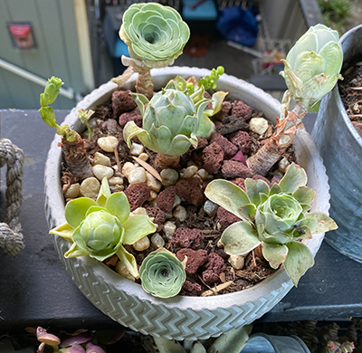
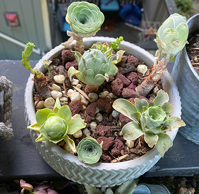

Graptosedum Ghosty
It is a hybrid between Graptopetalum and Sedum. The graptosedum has beautiful colorful rosettes. The plant turns to yellow-pink in spring or in full sun.

 



It is a hybrid between Graptopetalum and Sedum. The graptosedum has beautiful colorful rosettes. The plant turns to yellow-pink in spring or in full sun.
Echeveria cv Beniothine grow with red and pink edges on their leaves. The thick pale green leaves arranged in a circular pattern resembles locust flowers.
Each rosette is packed densely. The frosty-mint leaves have well defined sides and a pink tinge to the margins. The rosette clusters will stay dense with plenty of sunshine and infrequent watering.
Echeveria in this image are rare succulents with tiny sizes. Each of them have different colors and names. The ones with pink red edges are called Strawberry Cream.
This is another type of echeveria. Echeveria amistar have red pointed leaf tips. I know that if the plant is “happily stressed”, the edges of leaves will also turn red (as shown in the image). Echeveria are low maintenance and do not need a lot of care.
Sedum treleasei is a succulent subshrub, and native to Mexico. The stems can grow up to 20cm tall. The leaves are oblong with pale yellow-green color. It can grow from full sun to partial shade. Before you water sedum treleasei, make sure all of the soil is dry out.
Echeveria ice berry has a similar appearance with other kinds of echeveria. This plant grows with dense pink-green leaves. It is new to our home and arrived recently.